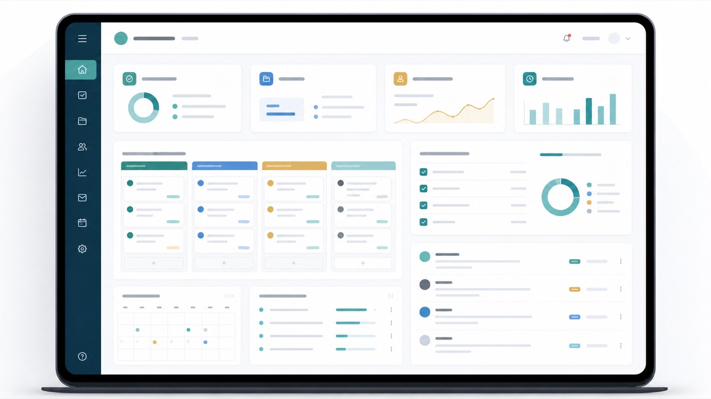
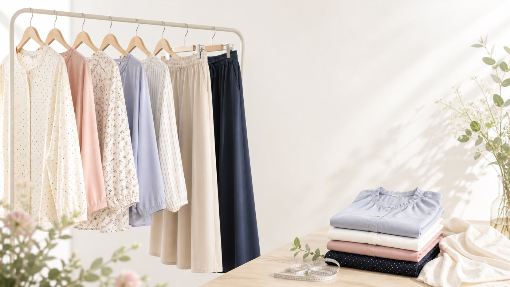

経験の土台
メールでの顧客対応を行ってきました。問い合わせ内容を読み取り、相手に伝わる返信文面を作成することを意識してきました。 このポートフォリオでは、その経験を土台に、メール文面・問い合わせ返信・FAQ・商品説明文など、文章で情報を整理する業務に近い内容を自主制作しています。
メールでの顧客対応を行ってきました。問い合わせ内容を読み取り、相手に伝わる返信文面を作成することを意識してきました。 このポートフォリオでは、その経験を土台に、メール文面・問い合わせ返信・FAQ・商品説明文など、文章で情報を整理する業務に近い内容を自主制作しています。
メールでの顧客対応で培った、問い合わせ内容を読み取る力、相手に伝わる文章を作る力、誤解が出ないように文面を確認する力を活かしたいです。 このポートフォリオ内のバナー案・SNS投稿案・HTML/CSSページは、AI/Codex補助を使って作成した自主制作サンプルです。現時点では、Canva/FigmaやHTML/CSSを単独で実務対応できるスキルとしては打ち出しません。



AI/Codex補助で作成した範囲と、本人が文面確認・内容整理・表現調整を行った範囲を説明しています。
AI活用レポートを見るメールでの顧客対応を土台にした制作目的と、AI/Codex補助の前提を1枚に整理しています。
概要1枚を見る